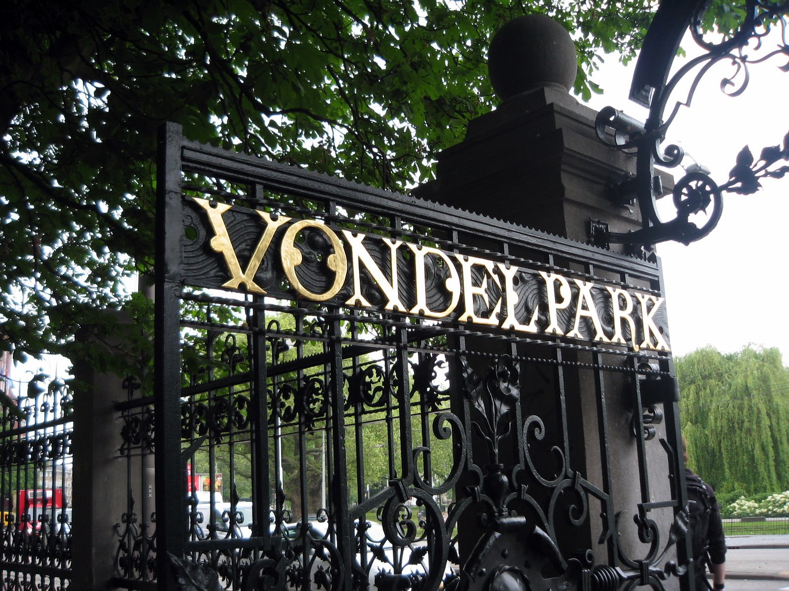

Amsterdam's Top 3 Parks
Vondelpark
Vondelpark is the largest city park in Amsterdam, and certainly the most famous park in the Netherlands. It is loved by Amsterdammers as well as by tourists, and is full of people - enjoying a sunny day, Dutch bike riding, dog-walking, jogging, roller-skating, listening to music, people-watching, or just lazing about in grass. There is playground for children and free concerts are given in the summer.
Google map and reviewsWesterpark

Westerpark blends green spaces, a lively creative and nightlife scene, and iconic architecture. Along with its regular exhibitions, markets and festivals, the converted Westergasfabriek gasworks contains indie shops, eclectic eateries, an art-house cinema, a brewery and a dance club. Nearby, the Museum Het Schip is the focus of a residential area of red-brick Amsterdam School buildings.
Google map and reviewsAmsterdamse Bos

The Amsterdamse Bos is three times the size of New York’s Central Park and entirely man-made. Spanning an impressive 1,000 hectares it is among the largest city parks of Europe. There is plenty to do here, from a goat farm, to a pool and a wellness center with a spa; you can sail on the water, or swing in the forest, visit the tram museum, or the outdoor theatre. There is something to do for everyone, and of all ages
Google map and reviews